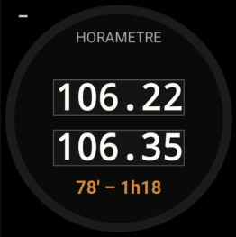
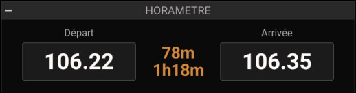

🕒
Horamètre
Relevés Départ / Arrivée · durée de vol calculée
ANLHRM · analogique
NUMHRM · numérique (100%-1L)


Possibilités
- Deux relevés (Départ / Arrivée, format NNN.NN).
- La durée de vol calculée s'affiche (différence × 6 min → minutes et h:mm).
Gestes
– Appui long sur une cellule : saisir le relevé
·· Double-tap : —